Flexbox é um layout do CSS que permite alinhar elementos de uma
maneira mais flexível do que com a utilização de float ou position.
Flexbox divide o conteúdo em um grid, onde cada item é um
"container" flexível. Os containers podem ser alinhados
horizontalmente e verticalmente com os eixos do flexbox.
Entendendo Os Conceitos Do Flexbox
Flexbox é uma técnica de layout que usa um modelo de caixa para
definir como os elementos são dispostos no espaço disponível.
Permite posicionar os elementos dentro de outro elemento
(container).
Os elementos dentro do container são conhecidos como itens.
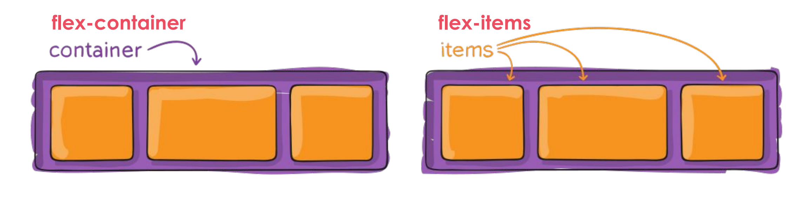
Display: Flex
A propriedade display: grid cria um contêiner flexível
que se estende para preencher o espaço disponível no bloco (elemento
pai), e os itens dentro desse contêiner são organizados conforme as
regras do Flexbox.
Item 1
Item 2
Item 3
Display: Inline-Flex
A propriedade display: inline-flex cria um contêiner
flexível que se comporta como um elemento inline. Isso significa que
o contêiner flexível será exibido em linha com outros elementos e
não ocupará a largura total disponível.
Item A
Item B
Item C
Item A
Item B
Item C
Os Eixos Do Flexbox
O Flexbox tem dois eixos principais: o eixo principal e o eixo
transversal. O eixo principal é o eixo ao longo do qual os itens são
distribuídos, enquanto o eixo transversal é perpendicular ao eixo
principal.
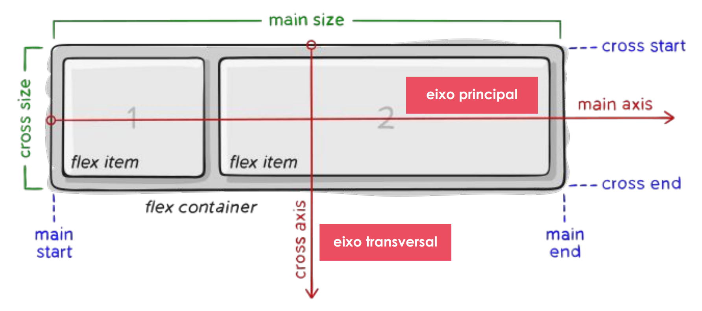
Os ítens serão dispostos no leiaute seguindo ou o eixo principal ou o transversal.
Eixo principal (main axis): o eixo principal de um flex container é o eixo primário e ao longo dele são inseridos os flex items. Cuidado: O eixo principal não é necessariamente horizontal; vai depender da propriedade flex-direction.
main-start | main-end: os flex items são inseridos dentro do container começando pelo lado start, indo em direção ao lado end.
Tamanho principal: A largura ou altura de um flex item, dependendo da direção do container, é o tamanho principal do ítem. A propriedade de tamanho principal de um flex item pode ser tanto width quanto height, dependendo de qual delas estiver na direção principal.
Eixo transversal (cross axis): O eixo perpendicular ao eixo principal é chamado de eixo transversal. Sua direção depende da direção do eixo principal.
cross-start | cross-end: Linhas flex são preenchidas com ítens e adicionadas ao container, começando pelo lado cross start do flex container em direção ao lado cross end.
cross size: A largura ou altura de um flex item, dependendo do que estiver na dimensão transversal, é o cross size do íten. A propriedade cross size pode ser tanto a largura quanto a altura do ítem, o que estiver na transversal.
Definindo A Direção Do Flexbox Com A Propriedade Flex-Direction
A propriedade flex-direction define a direção dos itens
ao longo do eixo principal. Os valores podem ser row,
column, row-reverse e
column-reverse.
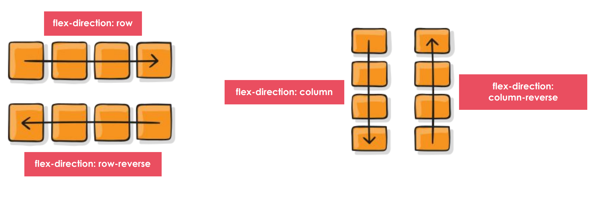
Quebra de Linhas e Colunas com Flex-Wrap
A propriedade flex-wrap define se os itens devem
quebrar para a próxima linha. Os valores podem ser
nowrap, wrap, e wrap-reverse.
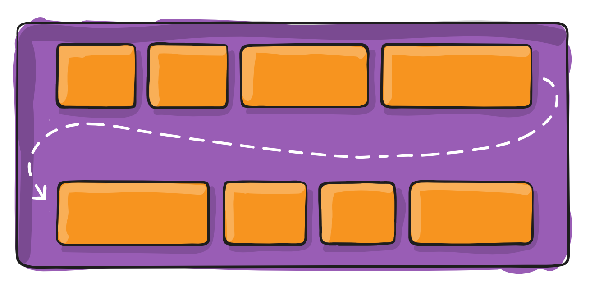
Item 1
Item 2
Item 3
Item 4
Item 5
Item 6
Item 7
Item 8
Juntando a Propriedade Flex-Direction e Flex-Wrap em Flex-Flow
Você pode combinar flex-direction e
flex-wrap na propriedade flex-flowpara criar layouts mais complexos. O valor padrão é row nowrap. Por exemplo, você pode usar column e wrap para
criar uma coluna que quebra em várias linhas.
Item 1
Item 2
Item 3
Item 4
Item 5
Item 6
Item 7
Item 8
Alinhando os Elementos no Eixo Principal com Justify-Content
A propriedade justify-content alinha os itens ao longo
do eixo principal. Os valores incluem flex-start, flex-end,
center, space-between, space-around e space-evenly.
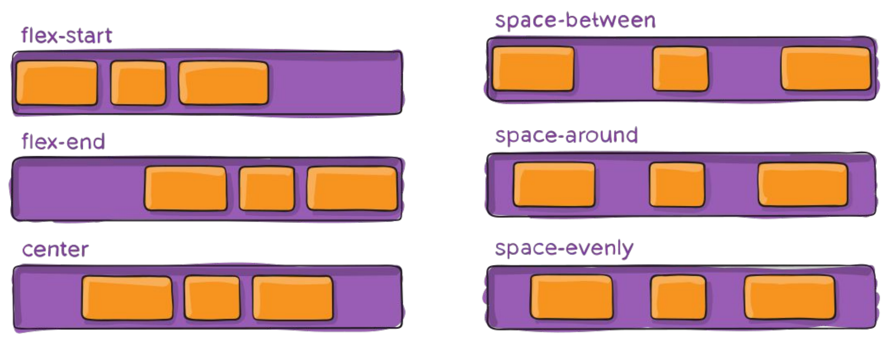
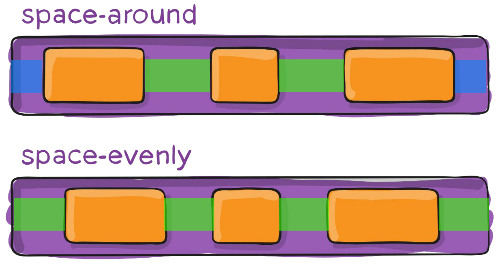
Alinhando os Elementos no Eixo Transversal com Align-Items
A propriedade align-items alinha os itens ao longo do
eixo transversal. Os valores podem ser flex-start,
center, flex-end, baseline, e
stretch.
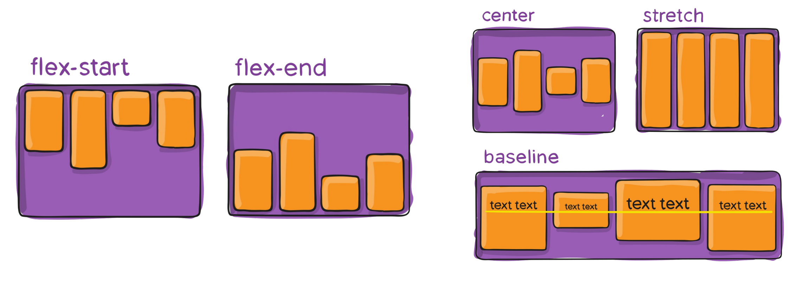
Alinhando as Linhas no Container com Align-Content
A propriedade align-content alinha as linhas do
container. Os valores podem ser flex-start,
center, flex-end,
space-between, space-around, e
stretch. Só tem efeito se o container tiver mais de uma linha.
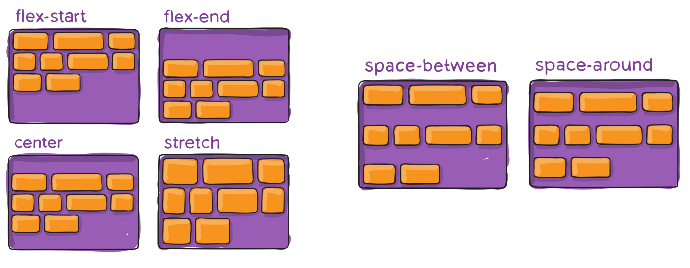
Controlando os Espaços entre os Itens com Gap
A propriedade gap define o espaço entre os itens em um
container flexível. Pode ser usado para definir a distância entre
linhas e colunas.
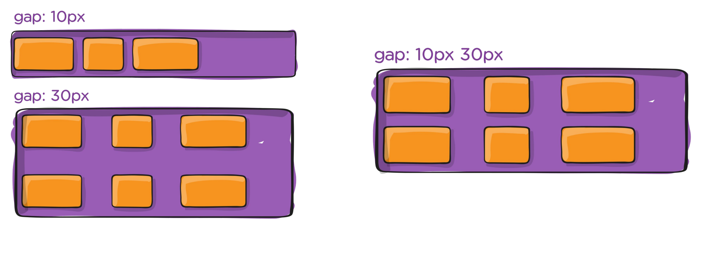
Ordenando os Itens Com a Propriedade Order
A propriedade order permite alterar a ordem dos itens
flexíveis. O valor padrão é 0, e valores positivos e negativos podem
ser usados para alterar a ordem de exibição dos itens.
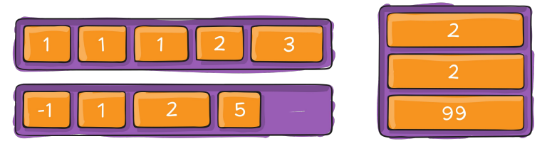
Propriedade Flex-Grow
A propriedade flex-grow define a capacidade de um item
de crescer em relação aos outros itens dentro do mesmo container. O
valor padrão é 0.
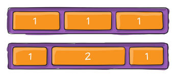
Propriedade Flex-Shrink
A propriedade flex-shrink define a capacidade de um
item de encolher quando o espaço é reduzido. O valor padrão é 1.
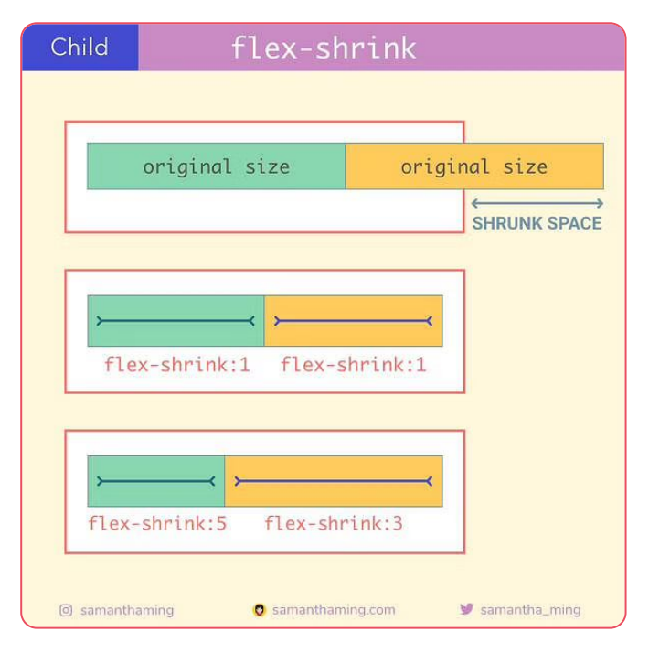
Propriedade Flex-Basis
A propriedade flex-basis define o tamanho inicial de um item antes do espaço disponível ser distribuído. Pode ser um valor em pixels, porcentagem, ou auto. Aceita também que o valor seja absoluto ou relativo.
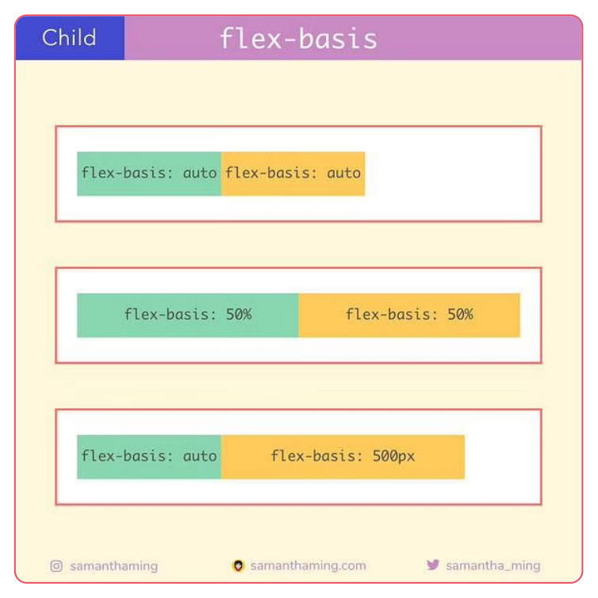
Caso seja aplicado flex-basis: 0, o espaço extra em volta do conteúdo não
será considerado. Se definirmos como flex-basis: auto, o espaço extra será
distribuído com base no que definimos na propriedade flex-grow.
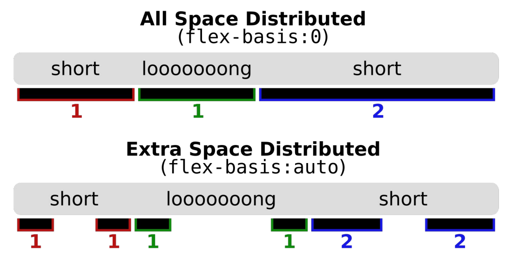
Se usarmos a propriedade flex-basis no item, ele irá sobrescrever o valor do
width/height do elemento. Porém, vai respeitar o max-width/max-height definido
para o elemento, assim como o min-width/min-height.
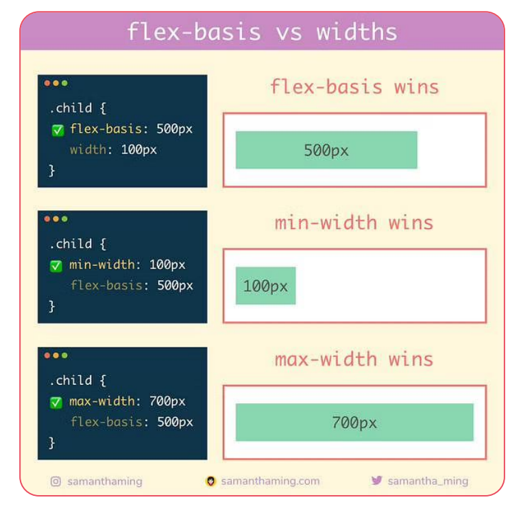
Shorthand Flex
Normalmente, as propriedades flex-grow, flex-shrink e flex-basis
não são usadas de forma individual, mas sim através da propriedade abreviada flex.
Os valores de flex-grow, flex-shrink e flex-basis, são definidos, respectivamente, através da
propriedade flex.
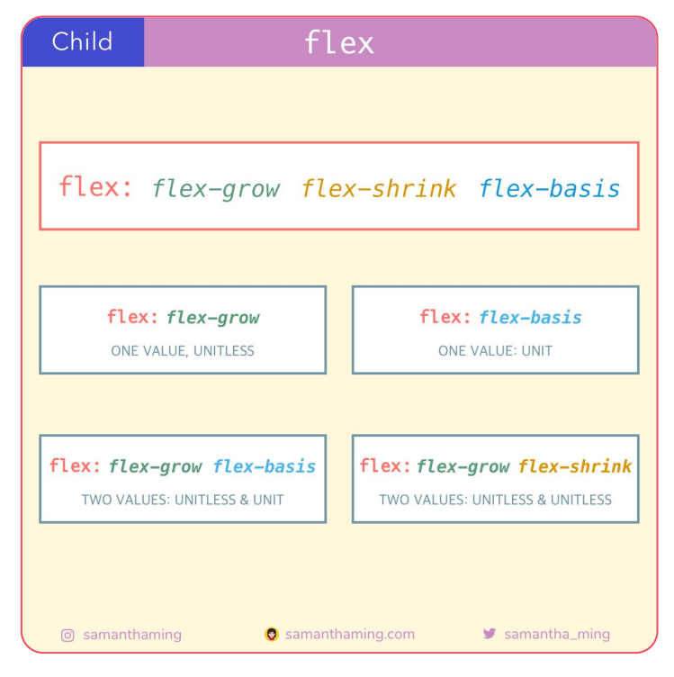
Propriedade Align-Self
A propriedade align-self permite que nós possamos sobrescrever o alinhamento padrão aplicado em todos os itens de forma geral que foi definido pela propriedade align-items.